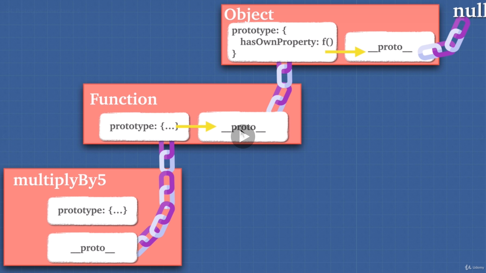

Using inheritance with either prototype or class allows us to save the
memory usage of the code. It gives us
reusability on the same piece of code
and can also enhance the redability. (Although class will give us
better redability and encapsulation, it is actually the prototype
inheritance behind the scene.)
BAD Practice - no reusability and wasting memories
const fighter = {
name: 'fighter01',
fight() {
console.log(`${this.name} is fighting!!)
}
}
const healer = {
name: 'fighter01',
fight() {
console.log(`${this.name} is fighting!!)
}
}
What is prototype?

__proto__ appears in every object
(almost everything in javascript are object). As you can see from the
above picture, we can see
__proto__ lives in the current object's
prototype and it links to the above parent's prototype. It is like a
chain that connects two objects together
to create an inhertance.
__proto__ can be assigned directly to other object's prototype but it
gives bad performance.
I heard that objects do not have prototype?
Object has __proto__ inside it but
does not contain any
prototype.
functions are the only thing that
actually have prototype
althought functions are also object at then end just like [].
Prototype in functions can be used to
create inheritance that can be inherited and saved to their prototype.
function a() {}
a.prototype.go = function () {
return "go go go!";
};
const b = a;
console.log(b.prototype.go()); // inherited using its own __proto__ from a.prototype
objects can use Object.create to create object that is inherited from the other object.
let human = {
exist: true,
};
let john = Object.create(human);
console.log(john);
exist was actually the property in human
After using Object.create() to create john, john will inherit human's properties and it will be saved in __proto__.
How to use prototype to create reusable code? Constructor Function
function Fighter(name, weapon) {
this.name = name;
this.weapon = weapon;
}
Fighter.prototype.fight = function() {
return `${this.name} is fighting with ${this.weapon}...`; //Why we don't put it into the constructor function?
}
const fighter0001 = new Fighter('fighter0001', 'sword');
console.log(fighter0001.fight()); //Return -> fighter0001 is fighting with sword...
Now we don't need to rewrite the code for any new 'instances'.
It works because we use the NEW keyword, it will create an object from the constructor function. Remember that we have to use THIS keyword in the constructor function for inheritance.
//Why we don't put it into the constructor function?
The elements in the constructor function will be created each time we create an instance (object) with it. So since don't want to occupy to many spaces in the memory, we add the function into the prototype.
Unlike other oop languages like Java and C++, we can save memories in this way using prototype chain. But thats not the case in those languages.
Class - the syntactic sugar
Javascript adopts prototype but it is actually not very readable expecially for the programmers from other languages.
Thats why the javascript team added 'Classes' into it... But it actually runs under prototype behind the scene.
class Fighter {
constructor(name, weapon) {
this.name = name;
this.weapon = weapon;
}
fight() {
return `${this.name} is fighting with ${this.weapon}...`; //Return -> fighter0002 is fighting with broken sword...
}
}
const fighter0002 = new Fighter('fighter0002', 'broken sword');
console.log(fighter0002.fight());
It looks kinda alike the prototype inheritance with constructor function.
But we can now encapsulate the method (fight()) into the same 'box' without using 'prototype' keyword outside the 'box'.
Inheritance is all about object inherits from object and its all about __proto__ links to parent's prototype via the prototype chain.
In the picture, the Ogre is actually just a class that wraps a constructor function, constructor function itselfs doesn't give any inheritance power but it allows us to use NEW keyword to play with THIS keyword.
The actually inheritance we use on attack() or makeFort() are happening in the prototype chain.
And this is because we don't want the methods to be copied every time we create a new instance from the class (or say using the constructor function), thats why we use it outside of the constructor in the class (actually using prototype behind the scene).